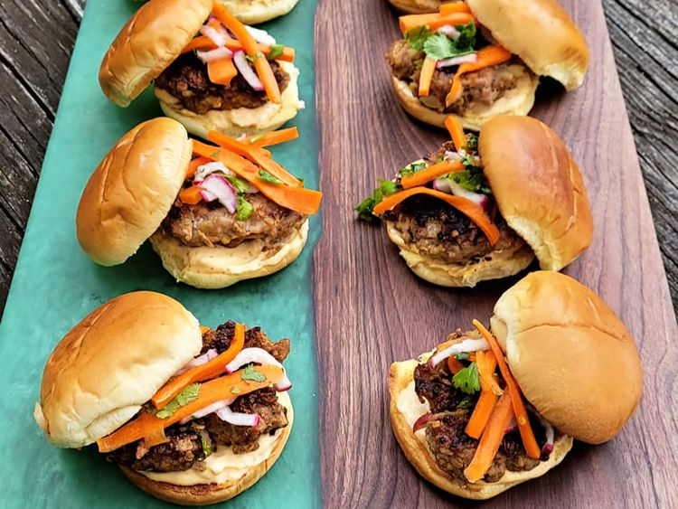

RECIPE OF BANH MI SLIDERS

Banh Mi SLiders Ingredients
- 1 pound ground beef
- 1 pound ground pork
- 1 cup rolled oats
- 2 slices bread, shredded
- 2 large egg
- 1/2 small onion, diced
- 2 stalk green onion, sliced
- 6 tablespoons dry onion soup mix
- 4 tablespoons chopped fresh basil
- 2 tablespoons soy sauce
- 2 tablespoons minced fresh ginger root
- 1 tablespoon sesame oil
- 2 (15 ounce) package slider-size burger buns
Steps
-
Step 1 : Gently mix beef, pork, oats, bread, egg,
onion, green onion, soup mix, basil, soy sauce, ginger, and sesame oil
together. Form 10 slider-sized patties.
-
Step 2: Heat a frying pan over medium-high heat. Add
patties and pan-fry until meat is browned and no longer pink in the
centers, flipping as needed, 5 to 7 minutes.
-
Step 3 : While patties fry, toast slider buns in a
toaster until lightly browned, 30 seconds to 1 minute each.
- Step 4 : Add patties to toasted buns and serve.